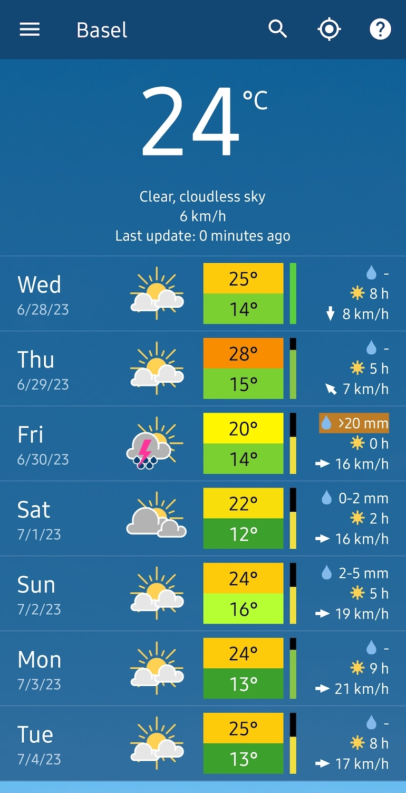

用 meteoblue 查天气，从完全不会到出门不淋雨
第一次用 meteoblue 也能五分钟上手。这篇带你看懂它和普通天气 App 的差别，学会看综合图表、多模式对比和可预报度，出门前心里有数。
这篇能带你从完全不懂 meteoblue 到用起来——不需要任何气象基础，跟着做一遍就会了。
它到底是干嘛的
你手机上大概率已经装了一两个天气 App，但 meteoblue官网 有点不一样。打个比方：别的天气 App 像是外卖平台，把国家气象台做好的菜摆出来给你看；meteoblue 更像是自己开了个厨房，请了一堆厨师同时做菜，然后把每个厨师的菜都端给你尝，顺便告诉你"今天厨师们意见比较一致"还是"这道菜有人说咸有人说淡"。

这家公司脱胎于瑞士巴塞尔大学的气象研究，从 2007 年开始自己跑数值模式——就是用数学方程在超级计算机上一格一格模拟大气怎么演化。欧洲地区的模式分辨率能细到约 3 公里，相当于你家小区门口那条街都能单独预报。所以它能给出一些普通 App 没有的变量，比如叶片湿度、生长度日、视宁度（观星的人用得到）。
最重要的是，它不只给你一个数字。它会把几十个模式的结果摆在一起，让你自己看"大家意见统不统一"——这比单一来源的温度数字靠谱多了。
五分钟上手
第一次用，按这个流程走一遍，以后就熟了：
- 安装包从官方下载拿，Android 和 iOS 都有。装好打开，首页会自动定位到你当前位置。
- 首页默认显示未来 7 天的周报，每天一个卡片，上面有最高最低温、天气图标、降水概率。点一下任意一天，就能展开逐小时详情。
- 底部有几个标签页，你暂时只用记住两个：图表和地图。其他的以后再慢慢摸索。
到这一步，你已经能用它查明天要不要带伞了——但别急，再往下看，它的干货在图表里。
上手后先玩这三个功能
这三个是新手最值得先碰的，每个都能立刻帮你做更好的出行决策。
All-in-One 综合图表
点进"图表"标签页，默认就是这张。它把温度、降水、风、湿度、云量全堆在一张图里，从上往下分层读就行：
- 最上面一层是温度：两条曲线叠在一起，一条是实测温度，一条是体感温度。两条线分离越大，说明风大或者湿度高，你穿衣服得按体感来，别按温度计。
- 中间是降水层：竖条是降水量（越大下得越多），曲线是降水概率。竖条和曲线一起高，说明肯定要下；曲线高但竖条矮，可能飘点毛毛雨，带把折叠伞就够。
- 下面是风层和湿度云量：风层里的小箭头告诉你风向，柱高是阵风峰值——骑车的话注意看这个。湿度和云层叠在一起，露营或摄影的人看高云量是不是接近零，决定能不能看到星星。

你会发现，原来"明天有雨"不是一句话的事——它可能是凌晨三点下、早上停，也可能是下午一阵暴雨。这张图一眼就能看出下雨的时间窗，安排户外活动围着空档排就行。
多模式对比
在图表页往下滑，能找到"多模式"视图。这里会同时画出几十个模式的温度曲线或降水曲线：
- 如果所有曲线挤成一团——说明大家意见高度一致，这个预报可以放心当计划执行。
- 如果曲线散得很开、一半说下雨一半说晴——说明大气正处于敏感状态，任何单一数字都不能全信，得做好两手准备。
新手不用管每个曲线具体是哪个模式，先看整体形态就行。聚拢就放心，发散就留弹性——比如原本打算骑车去郊外，发散的话改成地铁，省下一份不确定带来的焦虑。
可预报度百分比
这个指标放在图表页顶部，一个百分比数字加颜色条。它不告诉你天气是什么，而是告诉你这次预报本身有多靠谱。
高压控制的晴天、沙漠这类天气变化小的地方，可预报度常年偏高，数字好看。而低压过境、风暴、雷暴的时候，它会明显往下跌——这不是 App 不准，而是大气混沌的本性决定了有些天气本来就难报准。
怎么用它？很简单：高可预报度 + 高降水概率 = 一定要带伞；低可预报度 + 高降水概率 = 带上伞但别取消行程。它是帮你给预报"打权重"的，不是天气预报本身——更细的参数和解读可以翻 meteoblue文档。
小白的三个常见疑问
可预报度和降水概率到底有啥区别
一个是"会不会下雨"，一个是"我敢多肯定地告诉你"。比如"降水概率 80% + 可预报度 30%"，意思是"模式们觉得有八成可能下雨，但它们自己也没太大把握"。这种情况带伞就好，别因为预报可能不准就取消重要的事。
为啥有时候预报和实际差那么远
先回看一下当时的可预报度——如果那个时段可预报度本来就低，偏差属于正常波动，不值得对工具失去信任。大气是个混沌系统，初始条件差一点结果就完全不同，强对流天气本来就是世界性难题。meteoblue 把"我这次没太大把握"明明白白告诉你，反而比那些拍胸脯报一个数字的 App 诚实。
免费版和付费版差在哪
免费版能看基础的 7 天预报、综合图表和多模式对比的简化版，日常够用。付费版能拉长预报时段、解锁更多专业变量（农业图表、飞行专用图）、看历史回查。普通用户不花一分钱也能把上面讲的三个功能用起来。
这套数据和图表的背后，是巴塞尔大学那批人从 2007 年就开始跑的数值模式——NEMS 模式家族在云发展和降水预报上经过了十几次迭代，学习型多模式还会按你查询的那个具体地点的历史表现，自动给模式分配权重。
出门前五分钟打开 meteoblue，扫一眼综合图的降水柱位置、看多模式曲线聚不聚、确认可预报度在什么水平——三次下来你就会发现，原来"看天气"不是看一个数字，而是读一张图里的好几个信号。顺手说一句，这套整理好的 APK 和资料包也同步推到了 GitHub、Gitee、GitCode 三处仓库，随时能拉下来备份或二次处理。